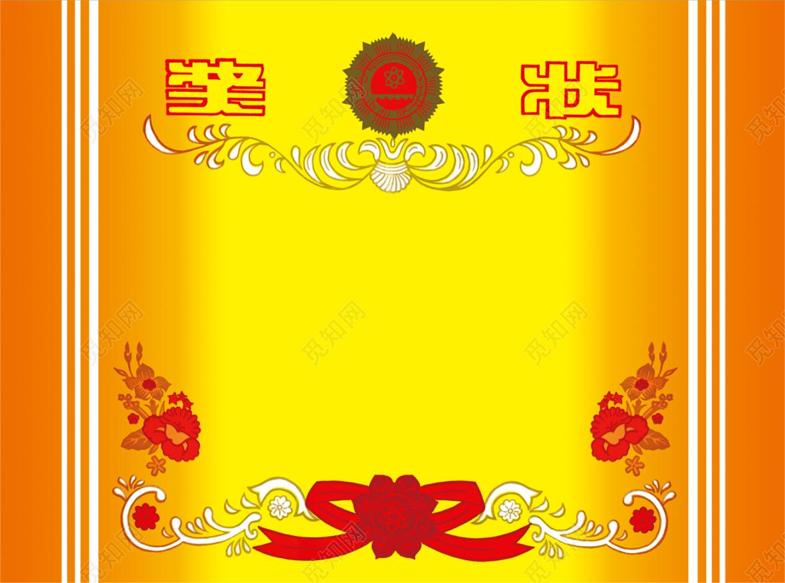
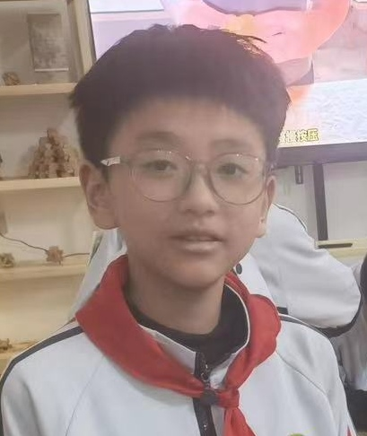
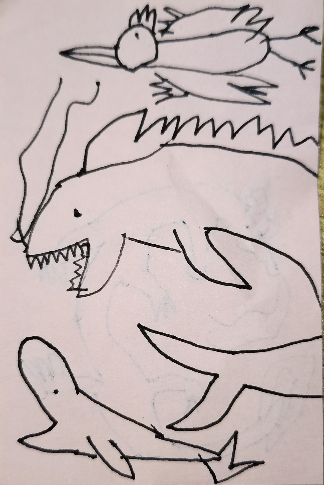
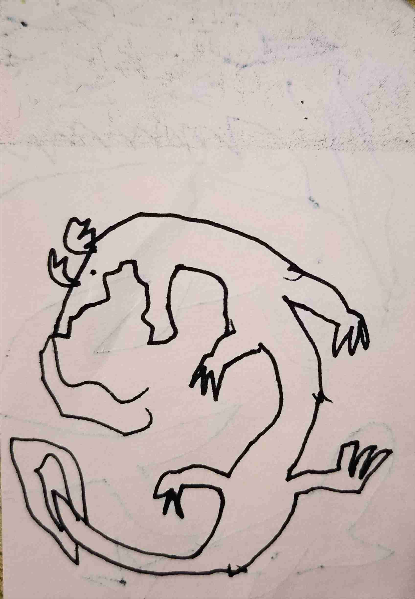
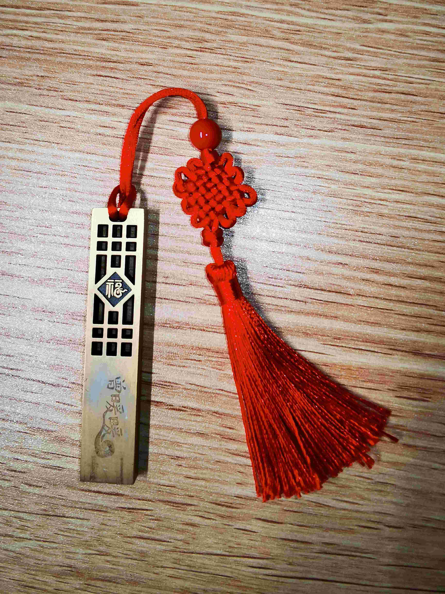
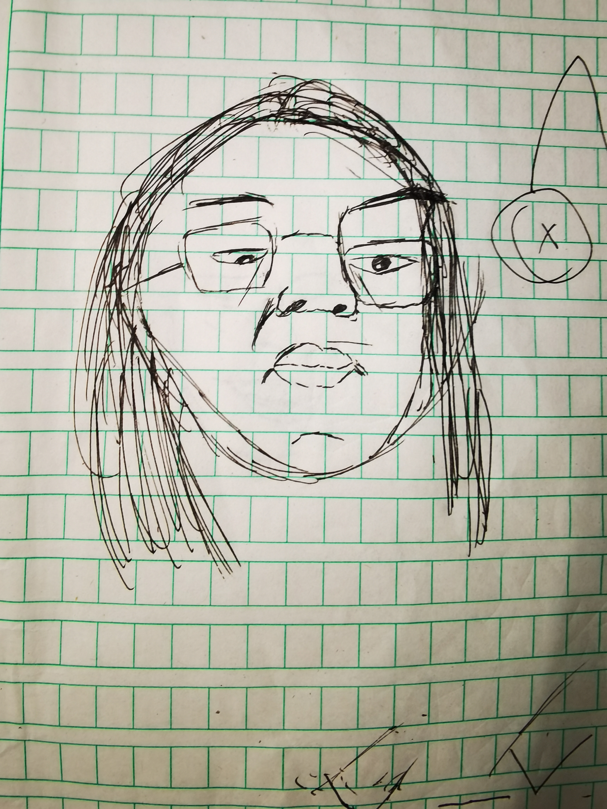
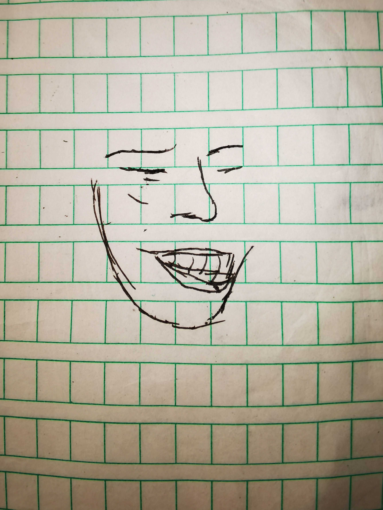
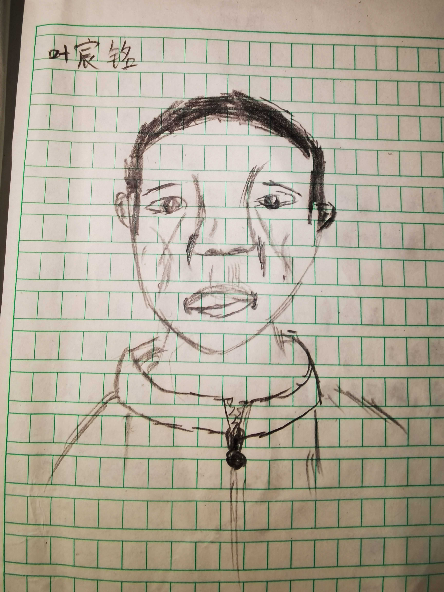
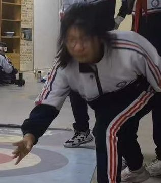

该网页有班上某些“风云人物”的简介可供查看。
点击下方表格中的名字或按“”按钮快速找到你要看的学生!
| 姓名 | 简介 |
|---|---|
| 瞿明爔 | 老师、家长：全班学习成绩最好 学生：班上的“男神”“标杆” |
| 叶宸铭 | 爱捣乱的“猴子” |
| 陈宇恒 | 这人很像猪八戒 |
| 刘圭宥 | 满脑子都是CN |
| 王湘琳 | 人尽皆知的“恋爱脑” |
| 吴一鸣 | 又高又帅的男孩 |
| 谢承志 | 不男不女 |
| 林煜昕 | 过年要被宰了 |
| 李诗彤 | 最与众不同的组长 |
| 陈彦豪 | 班上的“风云人物” |
| 蔡宇城 | 爱写小黄文的人 |
以下是班里爱情的总结（包括一至六年级）：
瞿明爔的外号还不少，很多都是CT起的，例如：男神、标杆等。
在家长及老师们的刻板印象中，他是——
CT：
家长：

不过，对于同学们……

五年级（或四年级）时，班里突然传出“男神喜欢陈诺”的消息。至于消息对不对，可能得看下面的证据了。
衣服：据观察，男神的衣服有黑绿线条交错（简称“西瓜条”）、“不潮少年”、5月27日等款式。
头发：从后面看，好像是倒三角样式的。
眼镜：这是最形象的一个特征，每当有人画他时，最引人注目的就是那副眼镜。男神的眼睛包括蓝色和黑色，镜框大致呈半圆形，是男神上小学后才开始戴的。
上故事！
早读课上，同学们有气无力地读着课堂笔记，不过更多人的注意力压根不在早读上，而是看着别人。
瞿明爔是全班为数不多认真念的人。突然，他挠了挠头，然后竟把刚抓过头的手指放到鼻子前闻了闻！
结果，这事就成经典了。
不过，男神在早读时不仅会闻头皮，还会把眼睛脱下来一会儿再戴上。
男神与郭吉家简直“难舍难分”，下课后经常在那里讨论《哈利波特》（有一次甚至还做了本哈利波特主题的书）或其他东西。有一次，郭吉家的作文被CT表扬，男神说：“他靠写我写了一页……”
总结一下吧：
| 事件 | 概括 |
|---|---|
| 唱《青花瓷》 | 男神在军训时唱《青花瓷》 |
| 闻头皮 | 男神在早读课上挠头并闻抓过头的手。 |
| 眼镜 | 男神的经典物品 |
| 呆毛 | 男神有时有几根头发会竖起 |
姓名： 瞿明爔
性别： 男
外号： 男神、标杆、霍明爔、西瓜条、2>3、草履虫、细竹竿
电话： 13706967543
微信昵称： 草履虫本虫
关于叶宸铭一至五年级时的历史（包括黑历史），这里就不说了（因为我忘记了）。本文章重点阐述六年级时的叶宸铭。
在老师的印象中，叶宸铭是仅次于陈彦豪的人物，他俩都有一个特点：调皮！
六年级时，他坐到了我前面，于是，我就有了观察他的机会。
叶宸铭经常被李诗彤用书打。有一次，李诗彤又要打他了，他“嗯？！”的一声，把双手握拳，左手举到额头前方，右手放到胸的前方，做出“防御姿势”。
结果，这个动作被周围的人模仿了好久，动作也是越来越夸张，从“嗯？！”变成了“啊！”，幅度也是越来越大。
后来有一次，李诗彤在抽屉底下看东西，叶宸铭以为她在看自己的黑历史，于是翻了个白眼，一手撑在桌子上，头则探过来，想“检查”一下。不出意料，这又成了经典。
叶宸铭有时会发出一种常人无法模仿的声音，被称为“弹簧音”
叶宸铭喜欢“偷梁换猪”。起初是把别人的笔盒交换，后来特指跑到后面打陈宇恒。
叶宸铭的手表里有一个软件，点开它之后会出现 一只小猫，下面有两个按钮，其中一个用来给猫喂鱼，另一个可以录音，然后猫会变声重复你的话。每次课上，叶宸铭都会去玩变声器，其中他对变声器说过最经典的一句话是 ：
据我观察，叶宸铭非常害怕狗，他每次放学回家都要提防有狗出没。例如有一次，我跟叶宸铭走时：
叶宸铭正走在回家的路上，突然发现前面有一只大狗，于是顿时谨慎起来，蹑手蹑脚地走着，生怕惊动那条狗。但最后还是惊动了，只听狗“汪！汪！”地叫着（我甚至没看到那条狗是否追来），叶宸铭拉着我就往回跑。跑了一会儿，后面终于没东西了，但叶宸铭还是很怕，甚至想往另一条路绕。
叶宸铭非常喜欢恐龙，经常会画一堆出来，比如：


叶宸铭自然闹过很多笑话，其中最特别的几个都在下面了。
一次体检，叶宸铭去测肺活量。
医生：快点呀！
叶宸铭：你直接给我坐下！
医生：还什么直接给我坐下啊？（另一种观点认为，这句话是“什么坐下不坐下的”），还敢跟我吵架呀？！
一次，叶宸铭的抄作业本的其中一张纸被李诗彤拿走，上面除了有作业，还有两行歪歪扭扭的铅笔字：
妈妈手机
mì码 830201
有一次，李诗彤想用手表拍他，他赶紧用优化遮脸。李诗彤拍到这一幕，说：“叶宸铭导购优化！”
一天放学，叶宸铭正路过一家水果店，不小心弄掉了一个橘子。他“卧槽”一声，赶紧把橘子放回箱子里。结果这事被陈宇恒越传越离谱，如“叶宸铭打翻一箱橘子”“叶宸铭偷吃橘子”。
一次，叶宸铭在自己语文53上写：
| 令你烦恼的事 | 坏处 | 好处 |
|---|---|---|
| 不想不周末做作业 | 不想做 | 明天就可以玩了 |
一次，叶宸铭说：
李诗彤说：
一次瞿明爔讲数学五三，有一道题出现了蜂窝煤蛋糕，结果叶宸铭骂道：“我操你妈瞿明爔，天天在那里讲蜂窝煤蛋糕，搞得我都饿死了。”
姓名： 叶宸铭
性别： 男
外号： 猴子、叶沉迷、叶彩迷、叶球迷
最喜欢的食物： 汉堡
最喜欢的电影： 《坏蛋联盟》
最喜欢的颜色： 蓝色
陈宇恒为转校生，但是在六年级时，他已经完全与班级“融合”了。
一到午托，陈宇恒就会拿出各种各样的水果来吃。例如火龙果、桑葚、杨梅、橘子。
陈宇恒考试几乎次次不及格，那些错的题几乎都是空着的。当然，也有例外。比如填空题，陈宇恒的答案是：
长（ 不知道 ）cm
有（ 好几 ）吨
解决问题：
……，这个数可能是几？
答：可能是1、2、3、4、5、6、7、8、9、10、11、12、13、14、15、16、17、18、19、20
陈宇恒喜欢破坏书本，久而久之，书本已经面目全非。以至于一次家长会MT让大家把数学书留下，结果陈宇恒就尴尬了。
注：以下描述均为陈宇恒小学六年级上册的书！
陈宇恒的语文书封面平平无奇,但翻开之后，你甚至看不到课题——因为全被他给挖掉了。当然，最牛的要数某一页单元指导，陈宇恒把路灯给画成了男神，而整页的上方有三个大大的空心字：“杨SB”，下面写着：“笑笑的整你”，还画了一幅CT丑照。
再就是《夏天里的成长》的插图，陈宇恒把孩子的眼睛用矩形涂黑，并在右下角配上了“审讯”的对话。这还没完，他还把荷叶圈起来，写出半径让求这个圆的面积。
陈宇恒版数学书有个特点，就是封面的“数”字支持“翻盖”。只需往下翻，便可露出下面的“玄”字，连起来就是“玄学”。
陈宇恒的英语书要数最特别的。首先就是封面，已经烂得看不清插图了，要不是有书皮，封面早没了。
其次是里面。像整页没掉的、乱涂乱画的、抠插图的，已经见怪不怪了。不过这些不算什么，陈宇恒六上英语书最特别的地方在于有三个洞，其中有一个直接贯穿全书，你甚至可以把手指伸进去，然后直接从另一侧出来。
姓名： 陈宇恒
性别： 男
外号： 小聪明、陈宇环、宇神、水果哥
刘圭宥在一个晚上发了一条朋友圈，竟揭露了他五年的秘密！
今晚我家只有我一个人，我可以把所有都发泄出来了！我已经放弃了，没有开玩笑，不要有谁再给我提“童钰轩”三个字昂，就让这1698天的喜欢全部都化为灰烬吧，就让这42天的想哭全部给我哭出来吧。谁要是再给我在那里狗叫一句啊，我特么直接一巴掌给你干过去！说实话，我是真的一年级开学第一天就喜欢上了ta，而且以前我妈不在家的时候把我扔到ta家，都是我自己提出来的，只为多看ta几眼。但现在呢，就算了吧，也不可能了。就让这泪水全部都流出来吧，撕心裂肺地哭出来吧。反正也只有我在家，也没人管。ta的生与死，喜怒哀乐，都与我无关了。也许像三叶和阳菜这样好的女生只有在二次元出现吧。像新兰这样的情侣，也只有在动漫里有吧，我也不想多说什么，只能说心碎了，碎了一地💔。但是也要乐观一点吧，至少在小学生活中，喜欢上了一个人的漂亮、学习好，但是不喜欢我的女孩子，ta说正在想要不要把我拉黑。我反正随便，你拉不拉黑我都愿意，你就算删了我都不会想再开始加，忘了你最好，反正没你我也能活，也有其他人会跟我聊天，不需要你来填满我的生活，谢谢你，能遇见你我真的很荣幸，但是现在，不……这么……想了……💔💔💔
第二天，朋友圈内容就被郭吉家截屏打印出来了，第二天，瞿明爔、老母猪这些人就都领到了一份，随之而来的当然是刘圭宥的脸红……
哦，不能说刘圭宥，因为自从这事发生后，他就多了两个外号：1698和42。
同学们拿到纸后，还把“童钰轩”给划掉了，因为：
不要有谁再给我提“童钰轩”三个字昂
不知怎的，有一次期末考后，同学们就齐声大喊“表白！表白……”同时把1698推向童钰轩——结果被别班老师训了。
这两句话相信大家都知道吧，我就不多说了。
姓名： 刘圭宥
性别： 男
外号： 1698、42、乌龟
电话： 17805958186
微信昵称： 释然1698
王湘琳以前的事件没啥好讲的，就只有被老师打红脖子之类的。可是到了六年级，事情就来了……
班里喜欢人的也不少，像男神喜欢CN、1698喜欢TYX、陈旻希喜欢1698之类的，可以自己去这个网页看。可是像王××这样______（此处找不到词语形容）的还是第一次见。（令我印象最深的一次是王××狂打陈砾航）
本章会重点讲述王湘琳的爱情故事。
可王××是什么时候喜欢上余佳皓的，却成了一个谜，目前只知道她的失恋时间是9月15日。为什么呢？因为王湘琳第一次的日记就是在那时写的。
关于她的日记本，封面不好看，内页不好看，只有内容好看——因为她的日记本就是拿英语笔记本改的！
“高端的日记往往只需要最朴素的本子”，这一本日记虽难看，但内在才是它的精髓。不过，制作过程也是其重要的一环。
要做日记本，那还得看王湘琳。首先，准备好一本刚出生的英语本（记住：千万别让ET发现），上面有着“英语”二字，里面没有任何字迹。本子的整体呈褐色，封面材质应该是牛皮纸吧。
这时，一个很重要的工具——涂改带就上场了。
准备好涂改带，并将“英语”涂掉，这样，英语本就初步具备了变成笔记本的条件。
但王湘琳这种人，肯定不会满足于这种简陋的本子——她偏要给日记本一点装饰。于是，她又在下面涂出了一个框，接着又在左边画出三列。
最后，在原来“英语”的那个区域写上“日记本”，下面的方框写“心情本”，然后即兴发挥一段：
我们每个人都有七情六欲
喜怒哀乐悲恐惊
酸甜苦辣咸
再加个笑脸，左下角写个“顾兮”这本日记本就做好了！虽然封面不怎么样，但能用就很好了。
然后，就可以开始写日记了。
和其他人一样，王湘琳绝不允许有人看她的日记，后果可能是王湘琳的崩溃或者王湘琳的报仇。结果，这日记反而成了“重点抓捕对向”。午托时，李诗彤甚至还趁王××走的时候把日记翻出来，用手表拍照。那段时间，王湘琳每次回来都得看看周围的人，觉得有一点可疑就：
王：“你是不是又动我日记了？”
其他人：“没有。”
王（着急）：“我都跟你讲了不要动我日记！……”
以至于这成了经典。
王湘琳以前就有外号（王昌龄），自从失恋之后，外号更多了。
曾几何时，同学们发现了她的网名——顾兮，结果一下课，同学们（陈忠宇喊得最起劲）就阴阳怪气地喊：“顾兮——顾兮！……”而王湘琳则会抱着头喊：“哎呀！”有一次早读《穷人》同学们读道：“近义词：顾兮（顾惜）——爱惜！”
上课了，同学们也不消停。像王湘琳的“好邻居”陈宇恒就会小声地喊她的网名，也会引起她极大的反应。从此，看王××就成了一种“娱乐方式”。
就因为这样，王××又多了个外号：王人妖。同时，她的第二个网名——白狐被爆了出来，她甚至还在午托时说自己还有一个网名。六年级下册时被查出来了——就在她的书包里。上面写着“顾兮、白狐、无声、琳”
王湘琳和陈宇恒已经达到了针锋相对的地步。例如陈宇恒如果有带零食或是水果，王湘琳必须拿一份走。还有更经典的，就是陈宇恒午托时在楼下正走着，王湘琳突然朝他的屁股踹了一脚,回来后王湘琳还拒不承认——结果不久陈宇恒就去告状了。后来，面对MT的审问，她还装作一脸无辜的样子，说：“我不小心踢了一下陈宇恒的肛门。”
从此以后，王湘琳就像发现了新大陆一样，与陈宇恒一有不和就威胁：“小心你的肛门不保。”
王湘琳一遇着CT，可就没有对付陈宇恒时的那种怒气了——因为CT会在全班说王××的黑历史。有一次，王湘琳说中午CT找她，对她说：“不要再喜欢别人了哈！”然后王湘琳就很纳闷了：他怎么知道我喜欢余佳皓？！
这还算小的，重点是CT会把她贬得一无是处。
王××的服饰可以用三个字形容：假惺惺。
| 鞋子 | 穿增高鞋，死装死装 |
| 头发 | 披头散发，形如女鬼 |
| 口罩 | 脸上戴罩，增添杀气 |
| 手 | 手插口袋，一副霸道 |
| 踢人 | 同学们看了不敢惹，陈宇恒看了跑得远 |
| 打人 | 或是疯打来报仇，或是猛打撒怒气 |
如果这两招都没用，那她就会启动语言攻击。例如，用冰冷的语气说：
王湘琳买了一个芒果造型的夹子。因为这芒果的颜色偏黑，跟余佳皓的肤色一样，所以王湘琳就把它当成了余佳皓。
结果。。。
CT想把书夹在展台上，可是讲台旁的夹子都太小，不能用。这时，王湘琳拿出了“余佳皓”，递给了CT，CT看到后，夸了她几句，然后拿去用了。王湘琳则哭笑不得。
这还没完。CT走下讲台，准备将夹子还给王湘琳，走了一半，CT突然说：“这是我的发卡~”同时将“余佳皓”往自己的头上一夹——王湘琳苦笑着接过了夹子……
这事可多了。比如一次午托，王湘琳在纸巾上写“我喜欢余佳皓”。
还有一次，王湘琳让我写立体字：
WXHYJH
YJHSWLG
WSYJHLP
是不是挺深奥？别急，让我们来翻译一下。其实，这三行字就是拼音简写。
WXHYJH 我喜欢余佳皓
YJHSWLG 余佳皓是我老公
WSYJHLP 我是余佳皓老婆
（王：你完了！）
那段时间，陈旻希完成了写1698个“刘圭宥”的壮举，于是王湘琳也开始写“余佳皓”，最终写了520个！
但现实总是残酷的。
王湘琳说，有一次放学时，余佳皓在楼道上骂她是女鬼。后来，王湘琳在班上骂余佳皓是空气、狗屎、傻子。
一次午托，同学们正在午休，教室里格外安静。这时，两人从门口走廊跑过，其中一人喊：“×××和余佳皓在三楼拉大便！”
别人被造谣通常都是竖中指或者骂一句“操你妈”，又或者脸红。但王湘琳就很较真，甚至还去告老师。
其实上面的内容都是在学校发生的，还有一些内容在背地里就偷偷摸摸地发生了，比如……
9.15
我失恋了，55555我好想哭，我好希望今天、明天他能去广场踢球5555555我错了，你不要不理我呜呜呜……我以后都听你的话，你不要不理我好不好啊……呜呜呜呜呜我好心痛啊余jiāhào
余佳皓，你不要不理我好不好啊×10我想哭，我闰闰说让我和他分手啊×20。而我不想分啊×30，她说他不会做饭，没有fj，让我快分55555，她还说他是渣男，我不信她。哎，他今天对我好冷淡啊×5
啊啊，好开心，他和我道歉了啊×40，哈哈，那他今天可以出来跟我踢球。
无语了，一个人都没有，呜呜呜他啥时候到啊cos：希望他可以7：00动身。
呜呜呜×50，他好慢啊，他为什么要7：30动身啊，啊×60他就不能快点吗，呜呜呜想哭呜呜呜×70
呜呜呜，有人让我和他去找1698，哎，我想哭他就不能快点吗？这里只有我了他不能快点吗？还有十分钟我能坐的了吧……
无语了，我出来玩看到小绿茶了，呜呜呜无语死了，不能让我好好玩会儿吗？呜呜呜她一直想看啊×10，无语了
呜呜呜，我今天吃醋了，他不知道我tm想死的都有了，我tm都哭了，他也不知道，还和他们踢球，m的下次不带了，啥也不带，气死他，把他气死，然后给他买个棺材，把它装进去，再给他一巴掌，把他扇死。cso：他说过不再和小绿茶玩了，说到她m的她今天和他挨得好近，真的想过去给她一巴掌呜呜呜×100想哭……×1万
9.16
家人们谁懂啊，m的我昨晚哭了一小时，哎我和他要分吗……呜呜呜昨天他让小绿茶出来玩，tm的让我哭了一小时，我要分吗？等待中……卧槽！不要那我还分吗……哎我听着悲哀的歌，我又又又又又又又想哭了，Bye……
还有一页更6——
论“加密”中的内容，那就是：
结果，它就被蔡宇城给刮了。那天本是ET看班，但王湘琳却哭了一个中午。
虽然还很多，但我没全记下来，只有这些：
后来，王湘琳的日记在午托时被她本人拿去给余佳皓保管，然后下落不明。
说实话，顾兮的音乐根本不是我去偷看的，而是她自己给我的！最近，我做了这个网站，结果王湘琳带着U盘来找我，想要这个网站的源文件。第一个U盘坏了，又给我换了个：

里面的东西就是顾兮的music了（上面那两个是系统文件，里面没东西），想吃瓜的可以下载。
下载王湘琳的瓜实在太多了，上面没有全列出来，可以参考一下下面的表格。
王湘琳发朋友圈：“考试中”并配上视频
王湘琳发朋友圈：“一人一句假话，我不喜欢余佳皓。”
王湘琳写下日记
王湘琳送余佳皓礼物
陈忠宇喊“小余~”导致王湘琳崩溃
王湘琳在纸巾上写“我喜欢余佳皓”
王湘琳在日记本中写了一个大大的“我爱你”并用涂改带涂掉，然后写上“加密”，结果涂改带被蔡宇城刮开导致王湘琳哭了一个中午
王湘琳：“我如果英语考及格了就去找余佳皓生猴子。”
王湘琳骗我说：“我当着余佳皓的面把日记烧了。”
午托时外面有人喊：“×××和余佳皓在三楼拉大便！”
王湘琳找我写立体字：
WXHYJH（我喜欢余佳皓）
YJHSWLG（余佳皓是我老公）
WSYJHLP（我是余佳皓老婆）
王湘琳：“余佳皓骂我女鬼！”
“你是不是又翻我日记了？”成为经典
“顾兮”这个网名被全班知道
李诗彤翻王湘琳日记并拍照
频繁到门口找余佳皓
早读时，同学们读近义词：“顾兮（顾惜）——爱惜”
王湘琳把余佳皓（芒果夹子）借给CT。CT归还时，突然说：“这是我的发卡~”同时将“余佳皓”往自己的头上一夹
王湘琳在课上写诗被CT发现。CT：“你又放花痴了……”
CT：“这个人有点早熟。”
王湘琳踹陈宇恒屁股却拒不承认，还在MT面前说：“我不小心踹了一下陈宇恒的肛门。”
王湘琳写520个余佳皓
CT：“把一个男生的名字写一千遍~”
MT处理王湘琳问题
王湘琳骂余佳皓空气、狗屎、傻子
王湘琳：“余佳皓家暴我！”
王湘琳和余佳皓的孩子被命名为“鱼丸”
（爱情故事终）
姓名： 王湘琳
性别： 女
外号： 王昌龄、王人妖、顾兮、白狐、无声
电话： 15259123477
微信昵称： 琳
最喜欢的书： 《斗罗大陆》
吴一鸣可谓是班里的偶像,而且他特别擅长体育（运动）。他的特点是：
老师们都很喜欢吴一鸣。例如一节音乐课，全班因纪律不好被罚站到下课。钟老师突然指出最后一排有人讲话，同学们都说是吴一鸣，但钟老师却反对道：“怎么可能是他？一鸣可乖了。
MT也不例外。每次午托结束时，他都让吴一鸣和张炜承去提凳子。且多名老师让他去拿饭、拿外卖等。
而且在午托时，体育老师的饭每次都是给吴一鸣和张炜承吃的。
吴一鸣的一个外号是777。
有一次午托，吴一鸣穿的衣服上印有“777”字样。于是，老师就说：“777，去扫地。”结果，他的同桌张炜承也被连累，因为他穿蓝衣服，被称为“蓝777”。
而另一个外号——Women's Day则可有来头了（详见“手举起来”）。话说英语课上，同学们因“women”这个单词发音与“吴一鸣”太相似了，于是纷纷笑出来，结果就被ET罚全部把双手举高，以至于清校后ET才放学。
姓名： 吴一鸣
性别： 男
外号： 777、Women's Day
身高： 170cm
最擅长的运动： 跑步
谢承志能在这里，纯粹凭的是运气，因为他刚好是我的前桌（叶宸铭）的同桌。
关于谢承志六上和六下时的性格，可谓是截然不同。那时候，他刚坐到李诗彤旁，随之而来的是14个组长的诞生，也是谢承志的噩梦。每当有练习时，李诗彤就会说：“你要是错的比叶宸铭多就完了。”或者：“你要是错了五道以上就完了。”那时（六年级上学期）谢承志只能忍气吞声，默默承受着这一切——李诗彤改完练习后，还会把叶宸铭及谢承志的练习直接丢到前面，当然还会让谢承志帮叶宸铭订正。谢承志只能“哦”一下，然后乖乖执行任务。
可到了下学期时，谢承志不知跟谁学的，竟具有了反抗意识，例如会说“你有毛病啊”“操你妈”等类型的脏话。当李诗彤让他帮叶宸铭订正时，谢承志还会用愤怒的语气说：“他自己的东西为什么要我帮他订正？”
而且，他动不动就威胁要告家长、告老师。有一次，我把李诗彤吃完的魔芋爽包装扔到前面，结果把谢承志衣服弄脏了。于是谢承志就恶狠狠地威胁要告家长。
但他有时候也挺老实，比如我让他扔垃圾，他也没有阻止。
总之，谢承志的性格变化得非常快。
| 六上 | 老实巴交 |
| 六下 | 易怒、爱骂脏话、具有反抗意识、语气、表情愤怒、骂人时语速快、倔强、喜欢顶嘴…… |
谢承志挺会唱歌，但是声音很“夹”。有一次，叶宸铭用手表拍到谢承志唱歌的画面（现已被谢承志逼迫删除）。
叶宸铭说谢承志很喜欢美女，且李诗彤也画过女生并说：“谢承志，这是你喜欢的。”
还有，谢承志在《山本彩迷》（谢承志画的丑化版的叶宸铭画像）中甚至有生殖器官。
谢承志很讨厌别人用红笔写他的名字。他认为，这样子很不吉利，且有诅咒的意思。
谢承志真的特别喜欢看那本《林长治讲故事》，几乎每天都会拿出来和叶宸铭分享。当然，他回家后还很喜欢看小说（是他自己讲的），要么是“七猫免费小说”，要么是“番茄免费小说”。
谢承志画了许多人像，但是巨丑，不信你看：
《殴容》

运用了夸张的修辞手法，生动、形象地写出了AT的自傲，将AT上课时的场景淋漓尽致地展现了出来。
《满脸都是牙齿》

牙齿比眼睛还大……
《大头儿子》

巨型鼻梁是什么意思？
他甚至写了个叶宸铭简历。
姓名：叶宸铭
性别：人妖
班级：六年（1）班
学历：小学没毕业
长相：头发乌黑，肤色偏黑，高额头，浅眉毛，小眼睛，大鼻子，羊嘴唇，小耳朵身材瘦小，身高0.001毫米，一身排骨。
经历：2012年从天而降，断了一身骨头，3岁，遇见屎递夫，爱上吃屎，6岁，得方天画鸡，杀义父，9岁，拜师孔子，变身金刚狼，拿爪子到处伤人，
后续见《宸铭传》……
有时候写成只会跟叶宸铭讲话，叶宸铭就发现了谢承志的口臭。每次，叶宸铭都会说“嘴巴好臭啊”，就连李诗彤也感同身受。为此，叶宸铭甚至还写了多首关于谢承志嘴臭的诗。
姓名： 谢承志
性别： 男（注：点击“男”字有彩蛋！）
外号： 谢瑞
电话： 13599379867
微信昵称： ZHI
最喜欢的书： 《林长治讲故事》
最喜欢的事情： 看小说

林煜昕（下文作“老母猪”）是六（1）的班长，但却毫无班长的样子——却很胖，有母猪的样子，因此被叫做“老母猪”。
注：视频很多，做好准备！！！
3月27日，就是老母猪请客的日子了（但其实她的生日是25号），本次的规划是：
老母猪家（玩）白湖亭万达二层融福记（吃饭）KKV
参加的人名单都在下面了。
让我们从老母猪家开始。
同学们陆续来到她家卧室，一堆礼物放在老母猪床上，大家几乎都在打游戏。
玩了一会儿，大家正式踏上了去万达的路程，林煜昕则走在最后（CN生日时，大家可是围着CN转哪！）。但是，童钰轩、张纤雅、许逸晗却边走边捧着本练习在刷题，结果差点踩到了狗屎。但是她们就是不想入镜，于是一看到摄像头就逃跑。
自始至终，她们都在刷题……
到了万达后，我们来到了“融福记”这家……饭馆！（真没想到），并进入了包间。那三人也不刷题了，而是掏出手机（张纤雅除外）打游戏（蛋仔派对），林泽晨、陈昊圻、郭予凡则在打游戏（游戏名不知）。后来，大家开始互相拍照。
还有一件事，就是老母猪吃蜜雪冰城的圣代（冰淇淋），竟然喜欢吃化了的。
生日嘛，蛋糕还是要有的。
吃完饭，大家竟然来到了外面拼积木！不过拼了一会儿也不拼了。
最后，大家来到了KKV，林煜昕甚至排起了短视频，视频中她将零食等东西一股脑地往篮里塞，还说“I'm 陈诺”。
后来，她们买了好几包卡片。
--end--
姓名： 林煜昕
性别： 女
外号： 老母猪、Old Woman Pig、老母鸡、粉色眼镜、林浴巾、态度姐
李诗彤身为小组长，对付组员肯定得有技巧——叶宸铭和谢承志就成为了她的头号目标。（详见谢承志）
李诗彤经常在英语课上吃零食，美其名曰“零食演唱会”。她不仅吃巧克力、薄荷糖，还把饮料瓶割开当作酒杯，然后把饮料优雅地倒进有瓶盖的那一半，并小口饮用。
李诗彤曾将某个人的电话备注为“林老师”，每当叶宸铭打人或没订正练习时，她就会说：“我现在就给林老师打电话。”，并把通话界面展示给叶宸铭，随后偷偷挂断，再假装和林老师通话。
姓名： 李诗彤
性别： 女
外号： let
电话： 13960871929
陈彦豪是六（1）的“风云人物”之一，而且脸皮特厚。不信你看：
姓名： 陈彦豪
性别： 男
蔡宇城本来不会出现在这里面的，但是他凭“实力”成功挤了进来，原因就是他写小黄文。午托时，蔡宇城拿衣服裹住自己，说要看“小黄文”——当然他说的没错。蔡宇城的小黄文是用自己的手表写的，而且他还很喜欢写。里面有色情的内容（蔡宇城对外宣布这是“18禁”的内容），他甚至还把这些文章的标题改为“谢卉的文件袋”“谢卉的文件袋2”“mt的文件袋”“语文复习资料”等等，并且为了防止偷看，他甚至设置了人脸解锁。
他还说，自己共写了三篇，一篇“男女”（也就是一男一女的故事）以及两篇“男男”，并说里面有少儿不宜，谨慎点击（点击可显示）等敏感词汇，所以不让人看，也不让人打扰，因为他说“一打扰就会立”。
蔡宇城不知道从哪里得知了一些色情新闻，如“一男子认为自己无性，于是将阴茎当场煮来吃”“有人对一男子说他的阴茎很短，于是那人直播时当场脱裤子展示”之类的。
自此，蔡宇城就开启了他的“色情生涯”。有段时间，他甚至会去手表中的《现代汉语词典》和《新牛津英汉双解大词典》中搜索色情词汇并截图。一次午托，他试着用小度翻译了一下“eat your penis”，结果还真行，翻译后是点击可显示。就这样，他开始疯狂翻译，比如点击可显示等等。后来，他还用英语写起了小黄文。那天下午，他还和陈宇恒大谈“阴茎”。